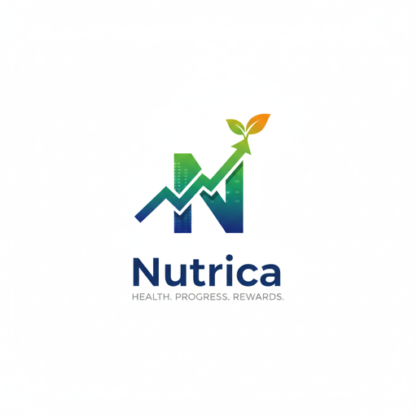

Meal scan results
Lighting, angle, hidden ingredients and portion size can affect estimates. Use a clear overhead photo and review the result before saving.

NutricaWe’re here to help
Find quick answers below or email founder@nutrica.site. Include your app version and device model when reporting a technical issue.
Lighting, angle, hidden ingredients and portion size can affect estimates. Use a clear overhead photo and review the result before saving.
Open iOS Settings, choose Health, then Data Access & Devices to review Nutrica’s step-data permission.
Open iOS Settings, tap your name, choose Subscriptions, then select Nutrica to view or change your plan.
Email us from the address associated with your account and describe whether you need access, correction or deletion.
Nutrica analyzes visible foods and estimated portions. Packaged labels use measured serving sizes, so the label should be preferred when available.
No. Nutrica is a general wellness tool. Speak with a qualified healthcare professional for personal medical or dietary guidance.
Use bright, even lighting, keep the full plate visible, avoid strong shadows and confirm individual foods or serving sizes when prompted.
Support requests are reviewed as soon as practical. Please avoid sending sensitive medical information by email.
Need direct help? Email founder@nutrica.site.